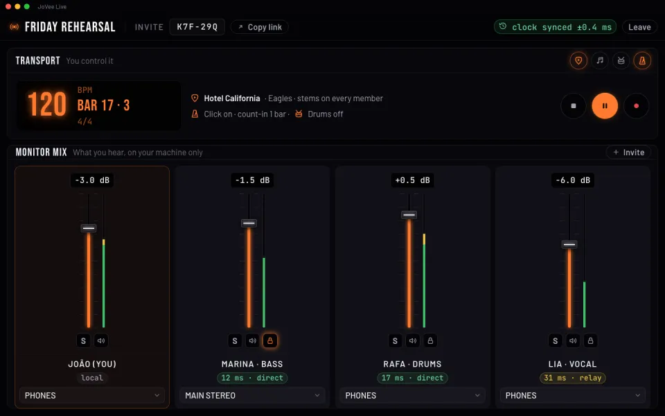

JoVee Rig
JoVee Rig
Os amps e pedais do app, as suas capturas .nam e IRs e os plugins VST3 do seu computador, todos na mesma cadeia.

Guitarra, baixo e voz na mesma interface, cada um com o seu amp e os seus pedais.

Mande o sinal por caminhos paralelos e misture de volta, ou mande cada caminho para a sua saída.

Cada amp e pedal abre com os seus próprios botões, que você gira enquanto toca.
Carregue na cadeia qualquer captura .nam ou IR que você já tem.
Use os VST3 instalados no seu computador no meio da cadeia.
Mande o sinal para um pedal da sua pedaleira e traga de volta no meio da cadeia.
Mostra qual bloco causa chiado, embolo ou estrondo e qual botão girar.
Um bloco de voz que dá a rouquidão de cantor de blues, ao vivo.
Cada cadeia é guitarra, violão, baixo, voz, teclado ou bateria e mostra só os blocos dela.
Cada captura NAM e IR que você instala vira um plugin para qualquer cadeia. Basta a sua chave do TONE3000.

Busque pelo nome, escolha NAM ou IR e instale sem sair do app.

Todos os plugins instalados em uma lista: veja os detalhes, atualize ou desinstale.

Mude os parâmetros de um plugin e restaure qualquer versão que você salvou.
Transforme os seus arquivos .nam e .wav em um plugin.
A partir de capturas A2 feitas em grade, o JoVee treina um NAM com botões contínuos.
Busque no YouTube de dentro do app ou adicione o seu arquivo.

Separe a música em bateria, baixo, voz, guitarra, piano e outros, e tire a parte que você toca.

A tablatura do Guitar Pro, ou uma feita da guitarra separada, rola junto com a música.

A linha que está sendo cantada acende enquanto a música toca.
Ouve você e marca cada nota no tempo, atrasada, errada ou perdida.
A guitarra troca de preset e de cena em cada parte da música.
Contagem e o nome da próxima parte falado antes de ela começar.
Acha cada guitarra da música pelo lugar dela no estéreo.
A tablatura é reescrita para a afinação em que você toca.
Corrija notas, acordes e linhas da letra você mesmo.
A bateria, o metrônomo e os delays seguem o mesmo andamento do projeto.

Toque junto com 75 ritmos de bateria e puxe a virada quando quiser.

Bases de rock, blues e funk separadas por parte, mais devagar ou em outro tom.

Até 8 loops por cadeia tocando juntos no mesmo compasso, com reverso e corte da onda.

Marque o andamento no tap e escolha o compasso e a subdivisão.

Veja os harmônicos de cada nota em um braço de 24 casas, com sustain e afinação por nota.

Uma guitarra gravada sem efeito passa em loop pela cadeia enquanto você ajusta o timbre com as duas mãos livres.
O metrônomo conta antes de você entrar.
Cada ritmo e cada base trocam a guitarra para o preset que você salvou com eles.
O campo harmônico e a escala de qualquer tom.
Confira afinação, frequências e volumes enquanto toca.

Um para cada entrada: afine uma guitarra enquanto a outra toca.

Fader, mute e solo para cada entrada e saída da interface.

Veja em tempo real as frequências de cada entrada e saída.
O nível de cada entrada e saída, com o nome de cada uma.
Meça quanto tempo o som leva da entrada até a saída, etapa por etapa.
A guitarra entra por uma interface e os monitores saem por outra.
Verso, refrão e solo ficam salvos como cenas de cada preset.

Todos os botões da cadeia em uma tela, com o mixer, o DI e o looper dela.

Cada cena manda PC, CC, nota ou SysEx para os seus outros equipamentos.

Volte para qualquer uma das últimas 50 versões de cada preset, ou traga de volta um bloco só.
Aperte o footswitch e escolha o que ele faz no app.
Use footswitches MIDI por Bluetooth, sem cabo.
O celular comanda o rig e mostra medidores, afinador e espectro, pela rede ou por Bluetooth.
Na primeira vez ele configura a interface, as entradas e uma primeira cadeia com um riff para ouvir.
Escolha entre Classic, Neon e Rack.
Português, English, Español, Français, Deutsch, 日本語, 한국어, 中文 e हिन्दी.
Cada app faz uma coisa. O Rig já está disponível; os outros chegam em breve.

 JoVee Studio
JoVee StudioGrave, edite, mixe e finalize músicas em várias pistas, com o Rig dentro.
Em breve JoVee Tone
JoVee ToneRecria o timbre de uma gravação por medição e configura no Rig.
Em breve
 JoVee Lut
JoVee LutGuia a regulagem da sua guitarra passo a passo, medindo cada corda pelo som.
Em breve
 JoVee Live
JoVee LiveToque ao vivo pela internet com outros músicos, cada um no seu rig e com o seu próprio retorno.
Em breve
 JoVee School
JoVee SchoolUm curso de guitarra do zero ao avançado em rock, blues e metal, que ouve você tocar para medir o seu progresso.
Em breve JoVee
JoVee